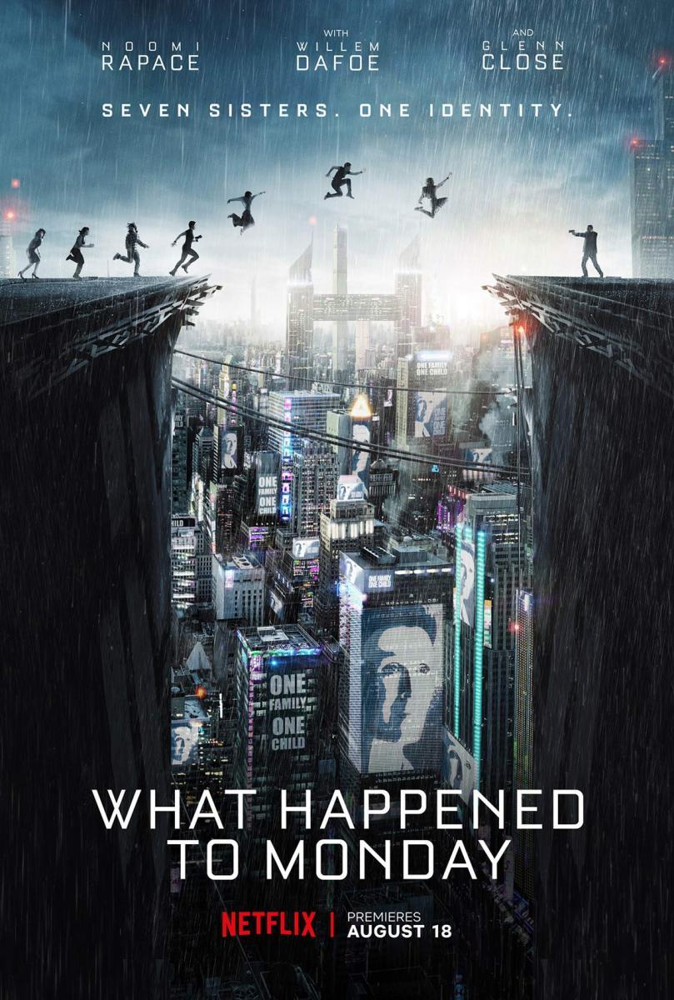

Fecha de estreno: 1 de junio de 2016
Sinopsis: Sookee es una joven que, en la Corea de los años 30, es contratada para servir como doncella en la casa de una rica heredera japonesa. Hideko, que vive recluida en una gran mansión bajo la influencia de un tirano, desconoce que, en realidad, la doncella está involucrada en un complot para estafarla.
Fecha de estreno: 27 de noviembre de 2020
Sinopsis:Conectado por un teléfono en la misma casa pero con 20 años de diferencia, un asesino en serie pone el pasado y la vida de otra mujer en juego para cambiar su propio destino.

Fecha de estreno: 30 de agosto de 2017
Sinopsis: En un futuro en el que está prohibido tener más de un hijo, seis hermanas que fingen ser la misma para pasar inadvertidas tratan de escapar del control opresivo del Gobierno mientras buscan a la séptima hermana, que ha desaparecido..